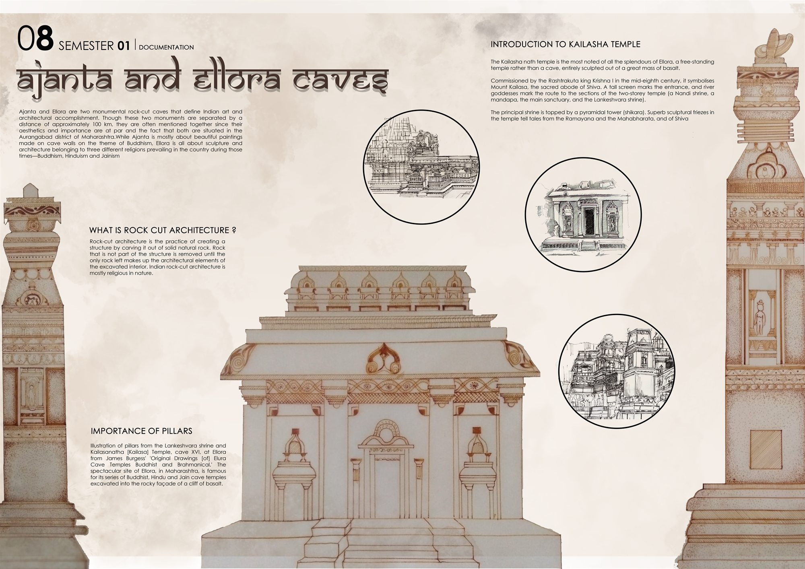

Documentation / 08
Kailasa Temple, Ellora
Documenting rock-cut architecture at the Ajanta and Ellora caves.

- Type
- Documentation, Semester 1
- Year
- 2019
- Location
- Ellora, Aurangabad district, Maharashtra
- Scope
- On-site sketching and drawn documentation of the whole Kailasa temple
Ajanta and Ellora are two monumental rock-cut cave sites in Maharashtra, about 100 km apart. Ajanta is known for its Buddhist paintings; Ellora for sculpture and architecture belonging to three religions of the time: Buddhist, Hindu and Jain.
Rock-cut architecture is made by removal: everything that is not the building is carved away from solid rock. The Kailasa temple, commissioned in the mid-eighth century by the Rashtrakuta king Krishna I, is its most remarkable example: a free-standing, two-storey temple cut from a single mass of basalt to represent Mount Kailasa. A tall screen marks the entrance, river goddesses mark the route to the Nandi shrine, the mandapa, the sanctuary and the Lankeshvara shrine, and sculpted friezes tell stories from the Ramayana and Mahabharata.
01Sketches and studies
Sketches made on site, alongside drawn studies of the temple's pillars and ornament, including pillars from the Lankeshvara shrine and the Kailasanatha temple.


